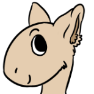
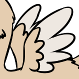
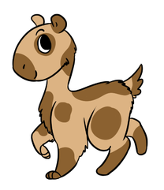

Upgrades and Markings
This is a list of every upgrade/modification you can buy for your Therapets! Make sure you have enough Sprinkles for it before you claim it!
Anatomy Changes
Eyes
Colored Eye
Color the pupil of your Therapet's eye (banned colors: grey, neon, white)
10 
Colored Sclera
Color the sclera of your Therapet's eye (banned colors: grey, neon, black)
15
Additional Requirements: Your Therapet must be 1 week old
Gradient
Give the pupil of your Therapet's eye a gradient (banned colors: grey, neon, white, black)
20
Additional Requirements: Draw your Therapet with a background
Glowing
Give your Therapet's eye a glowing effect (glow effect must be the same color as the pupil)
25
Additional Requirements: Draw your Therapet in a dark place
Heterochromia
Your Therapet's pupils no longer have to match (banned colors: grey, neon, white)
40
Additional Requirements: Your Therapet must be 1 month old
Head
Freckles
Little spots along your Therapet's cheeks and nose (must be a slightly darker color of the base coat)
5
Hair
Add some floofy hair to your Therapet's head (can be styled fur, but cannot resemble human hair)
10
Additional Requirements: Draw your Therapet looking at itself in a mirror
Beard
Give your Therapet a little goatee (can be any color already present on your Therapet's body, and can be any length/style)
10
Additional Requirements: How distinguished! Draw your Therapet showing off!
Eyebrow Change
Change how your Therapet's eyebrows look (limits on size and style, don't go too crazy! Can be any color already present on your Therapet's body, or a slightly lighter/darker shade of the base coat)
5
Horn Nubs
Two tiny little horns on top of your Therapet's head (not very sharp, banned colors: grey, neon, pure white, pure black)
15
Additional Requirements: Your Therapet must be 2 weeks old. Draw your Therapet protecting someone/something!
Ears
No Ears
Your Therapet's lost its ears! They've been replaced with little holes
10
Kitty Ears
These ears resemble a cat, standing upright with a bit of a point (inner fluff can be any color already present on your Therapet's body)
10
Additional Requirements: Draw your Therapet playing with cat toys!
Lop Ears
These ears resemble lop eared bunnies
10
Additional Requirements: Draw your Therapet hiding!
Feather Crests
Instead of ears, your Therapet's grown two feathery crests on the sides of its head. Ears are automatically replaced with little holes (holes can be covered by feathers, feathers can be any color already present on your Therapet's body)
15
Additional Requirements: Draw your Therapet interacting with some birbs
Body
Extra Floof
Your Therapet's fur has grown thick and fluffy (can be on whole body or just parts)
20
Additional Requirements: Draw your Therapet in the snow!
Long Fur
Your Therapet's fur has grown long and silky (can be on whole body or just parts)
20
Additional Requirements: Draw your Therapet getting groomed!
Feathers

Your Therapet has sprouted feathers on its body (can be on whole body or just parts, can be mixed with other body types)
20
Additional Requirements: Draw your Therapet partying!
No Fur
Your Therapet's lost all its fur (must be whole body)
10
Additional Requirements: Draw your Therapet being cold!
Rubber/Jelly
Your Therapet's turned into some kind of rubbery/jelly substance (must be whole body)
[EVENT] 0
Additional Requirements: Participate in an event offering this trait!
Back
Little Wings
Two tiny, feathery wings on your Therapet's back (banned colors: grey, neon)
30
Additional Requirements: Your Therapet must be 1 month old
Medium Wings
Your Therapet's Little Wings have grown! (requires Little Wings, able to be used to fly short distances close to the ground)
0
Additional Requirements: Must have Tiny Wings. Your Therapet must be 2 months old
Buggy Wings
Your Therapet has sprouted two cute, rounded bug wings (semi transparent, banned colors: grey, neon, black)
25
Additional Requirements: Your Therapet must be 1 month old
Tail
No Tail
Your Therapet's lost its tail!
10
Curled Tail
A curled, short tail. By default this tail is covered in fluffy fur, but if your Therapet has a different body type it can look differently
15
Additional Requirements: Draw your Therapet dizzy!
Long Tail
A longer tail similar to a fox or wolf. By default this tail is covered in fluffy fur, but if your Therapet has a different body type it can look differently
20
Additional Requirements: Your Therapet must be 2 weeks old
Horsie Tail
A tail with silky hair (can be any lenth, banned colors: grey, neon)
25
Additional Requirements: Your Therapet must be 1 month old
Fishy Tail
A rounded fin-like tail (banned colors: grey, neon, pure black)
25
Additional Requirements: Your Therapet must be 1 month old. Draw your Terapet swimming!
Dust
Color Changer
Change the color of the Dust your Therapet makes!
25
Shape Changer
Change the shape of the Dust your Therapet makes! (simple shapes only)
30
Markings
Markings work a bit differently. Every time you want to add a different type of marking to your Therapet, you need to first buy a 'marking slot'. Each Therapet starts off with 1, and can have a maximum of 5. For example, you just made your Therapet, and during the tutorial added large areas of your accent color. You can add stripes without buying a marking slot, and that will technically be your first marking.
Marking Slot

This allows you to add one different kind of marking to your Therapet
5
Spots
10
Stripes
10
Rings
15
Splotches
15
Shapes/Patterns
Must be simple shapes (ex. stars and hearts, not skulls or music notes), nd only one type of shape can be added per marking slot
20
Gradient
Can cover part of the Therapet, markings only, or the whole pet
20
Add a Color
Add a new color to your Therapet! (Banned Colors: Grey, neons)
50
Color Changer - Basic
Change the Colors that are already on your Therapet! This can change where they appear (ex. switching the base color with the accent color) or it can completely change the colors!
This only allows you to pick from the basic colors of Red, Orange, Yellow, Green, Blue, Purple, and Pink. Does not include brow, white, Black, or Pastel colors
100
Remove an Upgrade/Marking
Get rid of one upgrade or marking that you've purchased for your Therapet!
0
Additional Requirements: Your Therapet must have at least 3 drawings of it with the upgrade/marking you wish to remove
This does not give you your Sprinkles back!